品牌老化，是许多企业都会陷入的困局。一个历史悠久的品牌如果不能够与时俱进，取得年轻消费群体的认同，就会给消费者留下品牌老化的印象，随后逐渐被社会给抛弃。而傣妹火锅也面临着相同的困局。傣妹火锅成立于 1997 年，至今已经发展 20 多年。但是你会发现，曾今风靡一时的火锅品牌，已经慢慢被消费者给遗忘，大家好像一从校园毕业，就再也不会去傣妹火锅，偶尔去一次，也只能被冠上怀旧的标签。而企业的销售额也从 2014 年开始持续下滑，一直没能形成新的增长。2018 年傣妹火锅找到华与华，开启品牌焕新合作。在短短9个月的时间就翻新了45家超级门店，落地一家火一家。其中南京湖南路店在原有营业面积减少 53 %的情况下，翻新之后的两个月内，实现门店营业额同比提升 18 . 3 %，平效同比提升 151 %。一个 23 年的火锅老品牌正在焕发新生。那么是什么让傣妹火锅在短短的一年时间发生如此大的转变？又是什么样的品牌营销策略让他们敢于如此大手笔的投入，进行品牌的注入和焕新？今天我们就从华与华餐饮策划“四大天王”：超级符号，品牌谚语，超级菜单，超级产品，来还原傣妹火锅从传统老品牌到全新品牌转身的故事。

首先让我们回到 2018 年傣妹与华与华相遇的时刻讲起：傣妹火锅， 21 年的经典老火锅品牌1997 年全国第一家傣妹火锅餐厅由创始人房亮先生在安徽芜湖创立；当时吃火锅对于普通大众来说还是一件奢侈的事情，傣妹火锅建立的初衷是希望能够以亲民的价格，让大众体验到吃火锅的快乐。所以自傣妹火锅成立以来始终坚持走平价的模式，积累了一大批忠实的顾客，享誉中国大江南北。
阶段 1
明确傣妹火锅课题：“如何实现村姑变时尚白领？”
傣妹火锅经过二十多年的快速发展，打下了深厚的市场基础。但随着时代的发展和大众消费市场的升级，来吃傣妹火锅的人却越来越少，曾经被大家津津乐道的老品牌、好品牌，也一度沦为大家心目中“便宜”火锅的代表。即使我们是在人流量的中心，即使我们还是如此实惠。但是傣妹火锅已经不再是很多消费者选择范围内的品牌了。
在傣妹火锅找到我们的时候，傣妹的 CEO 说：我找到你们就是希望，怎么将我们这个村姑变成一个时尚的白领？

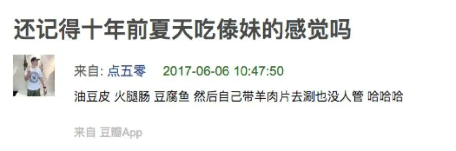
阶段 2
企业寻宝：探寻傣妹火锅的资源禀赋
在明确客户给的课题之后，回归原点思考，我们首要任务就是要去了解傣妹火锅在消费者心中的认知到底是什么？经过线上资料的收集整理，以及线下门店的随机访问，我们发现傣妹这个发展 20 多年的经典老火锅品牌，大多数人都吃过，这一路走来他积累了太多太多的品牌资产。而我们的任务就是在众多资产、财富中，把这个闪光的宝贝从他 20 多年的成长宝库中小心筛选出来，重新打磨、抛光，让他融入到现代人的生活中，至此，让他成为他自己，让他自己蓬勃生长，大放异彩。“笔下有财产万千，笔下有人命关天”我们的任何一个决策都会关乎客户的万千财产，甚至是企业的生存之基。所以我们怀着对傣妹这个企业的敬畏之心走进这个企业，从员工、消费者记忆中提取、发现傣妹的品牌资产。
阶段 3
超级符号：继承发扬傣妹品牌资产
华与华方法说一切传播，都是符号的编码和解码。超级符号就是选择传播效率最高、行动影响力最大的符号进行编码，通过对文化母体的品牌寄生，达到最低成本、最高效率的传播和品牌资产的积累。

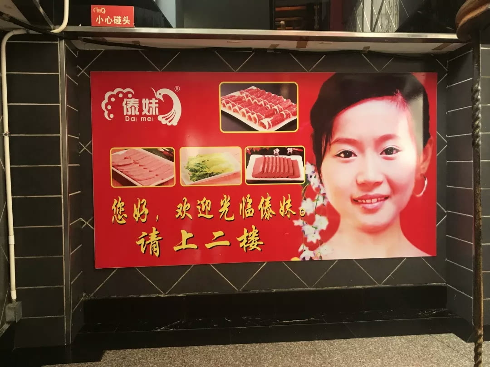
传承发扬品牌资产最好的办法是用超级符号，为品牌注入人类文化的原力。超级符号就是超级创意，它能让一个品牌在一夜之间成为亿万消费者的老朋友，迅速建立起品牌偏好。它是一个能在品牌建设与营销传播中会引发奇迹的存在。所以我们没有给傣妹创造新东西，我们只是重新发现这个企业。我们发现不管是消费者还是企业的员工，“孔雀”都是最不可磨灭的记忆，是傣妹最深刻的代表。傣妹之前门店的门头以及门店装饰，都在使用孔雀的符号，打造了一个孔雀的门店体验环境。
傣妹火锅翻新之前门头及内饰效果
而且我们在进行消费者调研时，让他们画出心中的傣妹，发现 76 %的消费者已经形成了傣妹就是孔雀的认知。
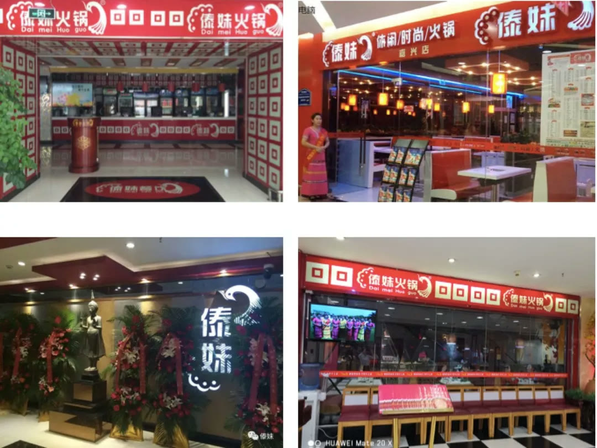
所以我们在傣妹众多的品牌资产中，找到最具代表性的资产：孔雀；
想到了孔雀，肯定会想到孔雀最具代表性的动作：孔雀开屏；所以我们把孔雀进行私有化的改造，创造最能代表傣妹火锅的孔雀开屏超级符号：
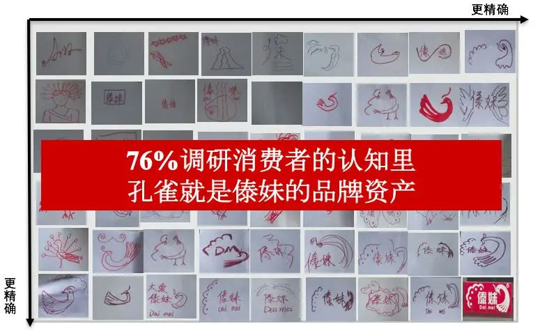
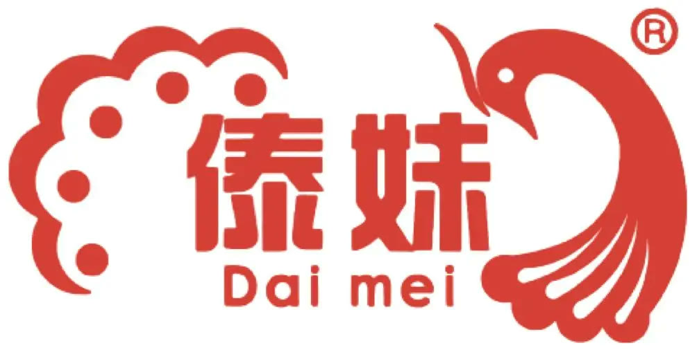
打造超级门头，创造品牌门店的陈列优势一切的行为，都要从企业经营的角度出发，所以我们去想应该怎么应用这个超级符号，从而给企业带来经营上的优势？华与华有一个重要的理论就是“货架思维”，符号的关键是创造陈列的优势；对于餐饮企业来说，街道就是货架，门店就是产品，店招就是包装，让包装会说话，与消费者快速沟通，并把自己卖出去。所以我们把动态的超级符号应用到门头上，创造惊鸿一瞥的视觉效果，降低被发现成本、被识别成本，从而一举成为整个街道的明星。
上海康桥店门头效果前后对比
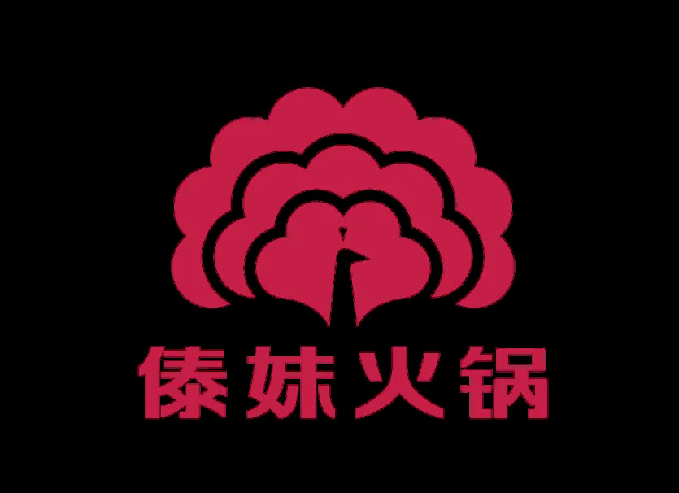
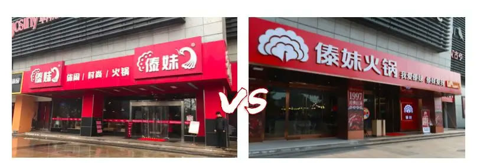
上海康桥店门头夜间效果
上海南京路店门头夜间闪烁效果
打造傣妹超级门头的关键点1 ）超级符号上门头，孔雀开屏动态展示。人是视觉动物，对运动的东西远比静止的东西更敏感，我们把傣妹孔雀开屏的超级符号以动态的形式放在门头上，消费者在老远处就会被我们的门头吸引、驻足。而且闪动的店招的具有可描述、可传播性，极大降低了门店的传播成本。2 ）用色如用兵，占领整个街道。颜色的记忆成本远远低于文字成本，铺满颜色的门头，让人远远的就能看到注意到门店，也许他看不清字，但是靓丽的傣妹中国红照样能锁住顾客的眼球，让门店成为整条街最亮的星。
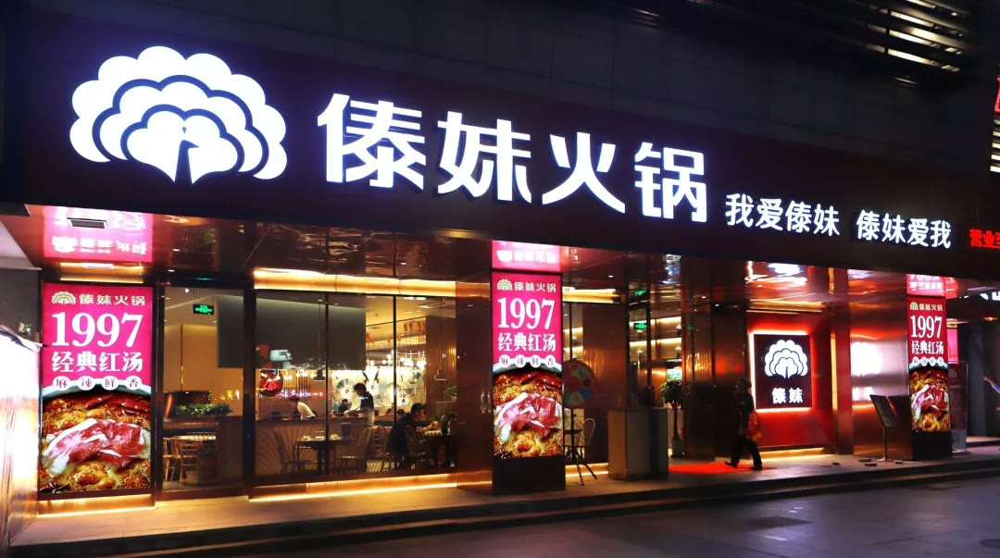
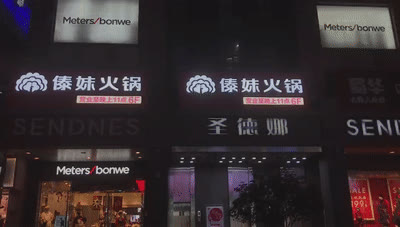
打造超级形象加速与消费者的沟通与互动超级角色，就是品牌自己创造的品牌代言人，有自己的品牌角色，就打造了一个可以长期重复投资的品牌资产。所以我们充分发挥了品牌名“傣妹”与生俱来的戏剧性，打造傣妹火锅的超级形象：热情好客的“小傣妹”
小傣妹超级形象
小傣妹就是我们的品牌代言人，在品牌营销活动中对小傣妹进行投资，以后我们花的一分钱都会存在小傣妹这个超级形象上，直到五十年之后都还能收到利息。
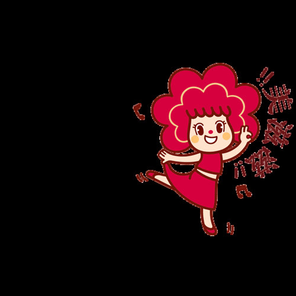
小傣妹品牌超级形象的全面应用，加速了傣妹火锅品牌传播效率，降低了品牌传播成本，增加了品牌资产的积累。
阶段 4
品牌谚语：为傣妹火锅插上有翼飞翔的翅膀
有了超级符号我们觉得还不够，我们就在想有没有一句语，能够提供给消费者，让他们替我们传播？有。那就是品牌谚语，谚语是毋庸置疑的，它是古老的经验和长者的忠告，是具有权威性的；它的传播成本最低，它对受众的参与度要求很低，但卷入程度很高，能够让人们自发的帮助我们传播。所以我们要设计一句品牌谚语让消费者可以说给别人听，形成品牌的自传播。好的创意不是创造出来的，而是原本就存在的，一直在等着你去发现。我们发现消费者在 2011 - 2018 年这段时间，会无意识、自发的使用一个超级句式来表达对傣妹火锅的热爱，那就是——“我爱傣妹，傣妹爱我” 。这是一个超级句式，而这个超级句式的被广泛使用就是一种集体潜意识现象。

大众点评截图
所以我们为傣妹火锅打造了一句品牌谚语：
这个超级句式出自張震岳和侯佩岑所唱的《我愛台妹》这首歌，歌词中“我爱台妹 台妹爱我”曾经红遍大街小巷，成为一代年轻人的集体记忆。我们寄生到这句有文化原力的话，注入傣妹的品牌基因，“我爱傣妹 傣妹爱我”品牌谚语一经落地使用，便落地生根，自发生长。
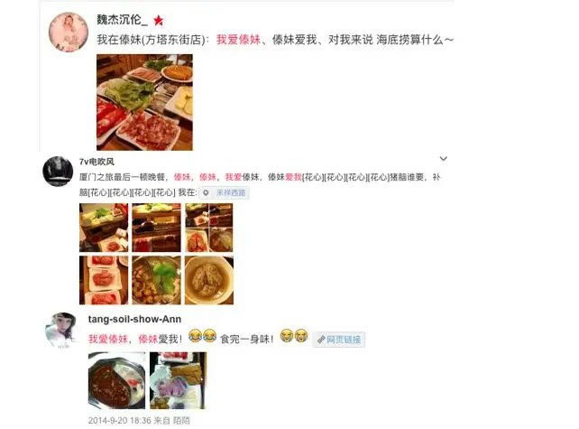
“我爱傣妹 傣妹爱我”大众点评大规模霸屏
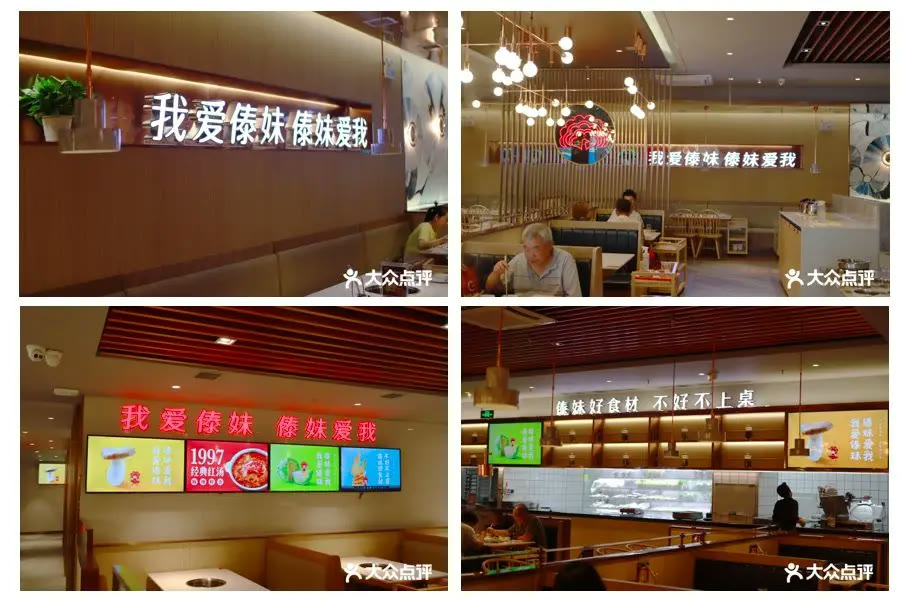
阶段 5
超级菜单：不花一分钱的战略型营销道具
这些策略的制定是可以持续积累的品牌资产。那么品牌还有一个很重要的工作就是传播，品牌的传播离不开广告的投入；只有进行压倒性的广告投入才能给企业快速带来经营上的增长。傣妹火锅受制于亲民平价的经营模式，不可能在商圈进行大批量的广告投放；于是我们为傣妹找到了一个不花钱的超级广告位：门店菜单。菜单本身是一种点餐工具，在傣妹一直被当做传单来使用。傣妹全国有 160 多家门店，一家门店一天消耗 200 张菜单，一年就有 1100 万张，相当于 1100 万张免费的广告位。
将菜单设计成一张承担着傣妹品牌营销的战略性道具，加速消费者购买决策，进行低成本，高效率传播，是一个不增加一分钱的超级广告位。
新老菜单效果对比
接下来向大家解析一下，我们是如何打造傣妹超级菜单：1 ）把菜单封面当海报进行设计，打造超级广告位，提供购买理由
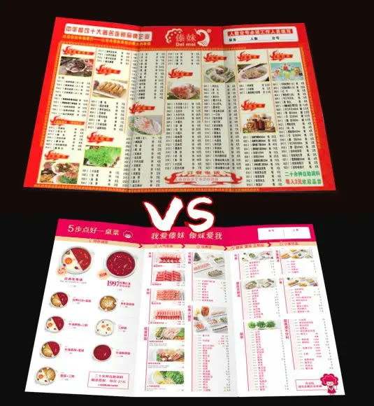
菜单动作 2
在菜单上呈现好食材证供，强化购买理由
菜单动作 3
设计“ 5 步点好一桌菜“，提供消费者购买指南
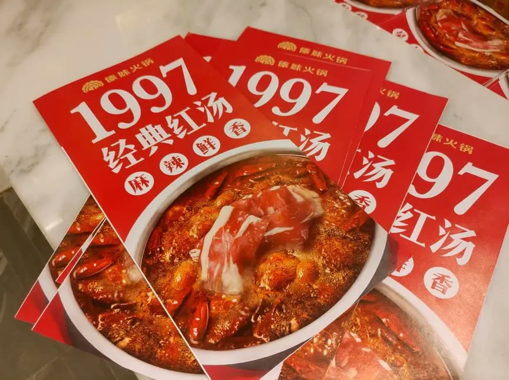
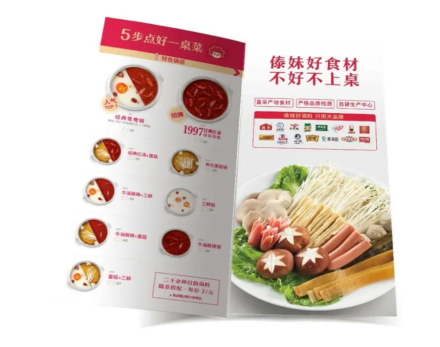
菜单动作 4
货卖一张图，释放食材价值
菜单动作 5
价格由高到低排序，凸显品牌价格优势
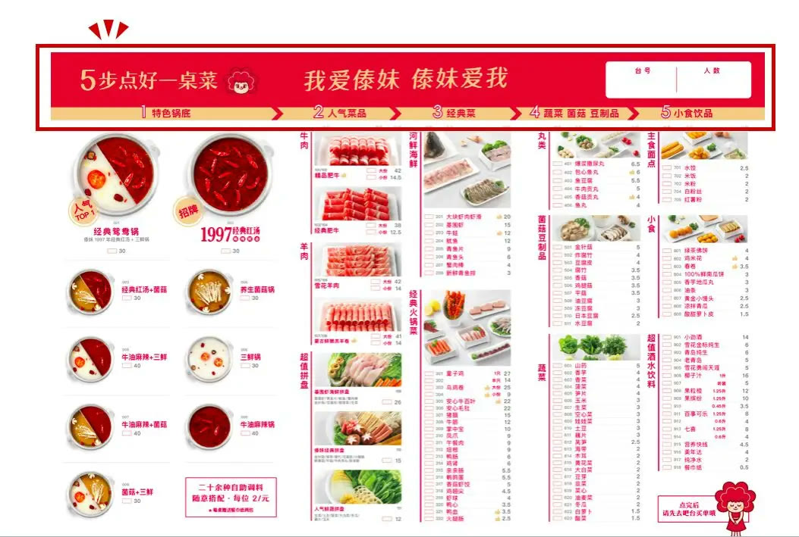
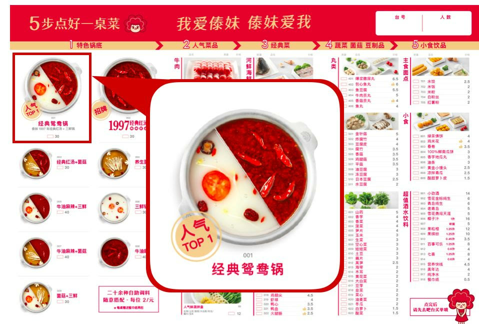
菜单动作 6
提供推荐菜品，让消费者无需思考，马上下单
阶段 6
超级产品：营销先行，打造傣妹火锅超级爆品

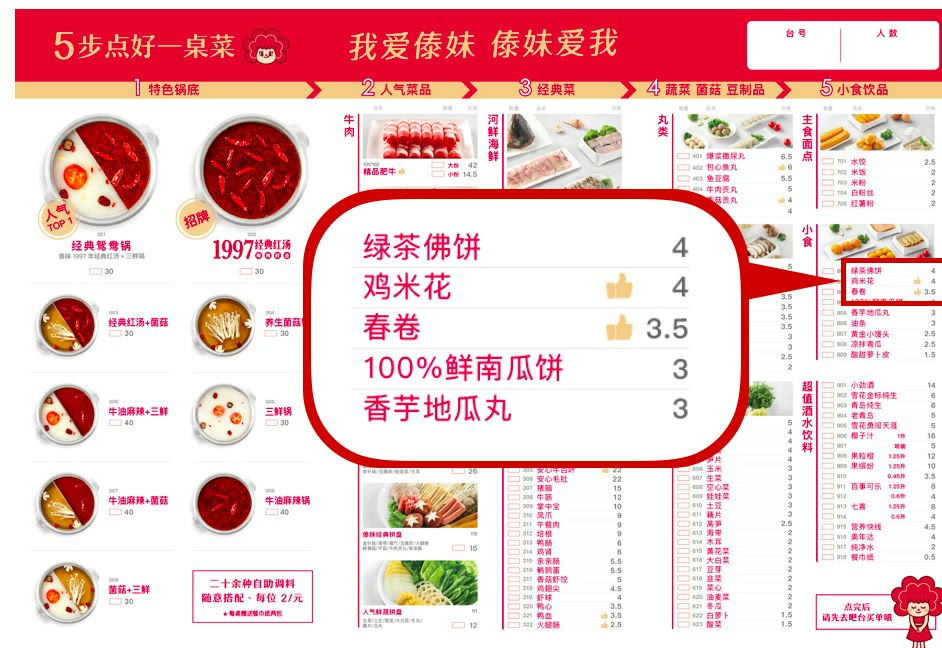
企业就是产品，每一个企业都有一个代表性的产品。一个企业要想长久的生存下去，必须要有自己的拳头产品，让顾客想到你，就想到你的拳头产品，想到某方面的产品也就想到了你。但是傣妹发展至今，还没有形成一款特别有代表性的产品。基于此，我们期望为傣妹火锅打造一款产品，让人一提到这款产品就能想到傣妹，一提到傣妹也能想到这款产品。华与华产品开发原理：开发产品就是开发购买理由；产品开发的流程不是技术导向，而是营销导向，先有营销再有产品，根据我们提出的购买理由，再交由客户去开发这款产品。傣妹火锅爆品开发分为五大步产品选择：就是选择有“爆品像”的产品产品开发：就是开发购买理由产品实现：就是满足购买理由产品体验：就是营造消费产品时的体验产品传播：门店全面媒体化1 ）产品选择就是选择有“爆品像”的产品大流量是爆品打造的基础。爆品打造的前提是选择大流量的产品去开发，而肥牛是整个火锅门店最大流量的单品，也是消费者接触最多的产品，所以我们把它当作我们重点开发的产品。
- 精品肥牛
- 活体豆苗
- 飘香豆皮
- 大块虾肉虾滑
产品动作 2
产品开发就是开发购买理由
任何购买，购买的都是某一个购买理由。大家平时吃肉的关键就是要吃的爽，吃的爽的关键就是这个肉比较大，特别大，所以我们为傣妹创意了一款“巴掌大肥牛”，就是肉比巴掌还要大，并通过命名来传递我们产品的价值。
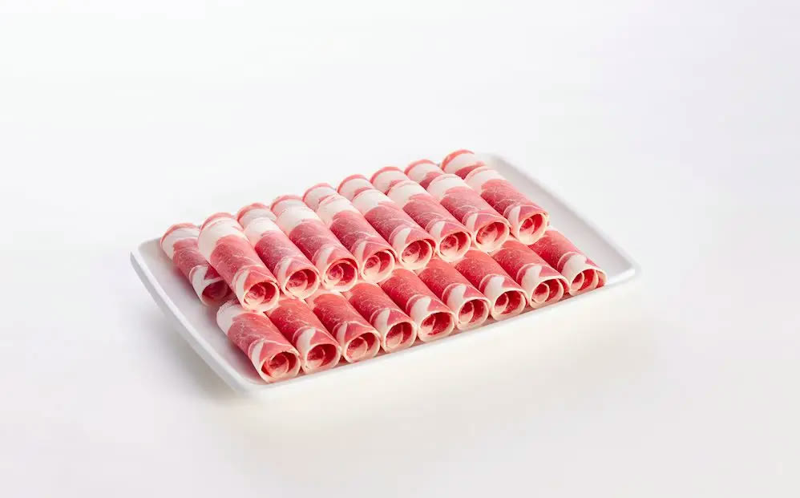
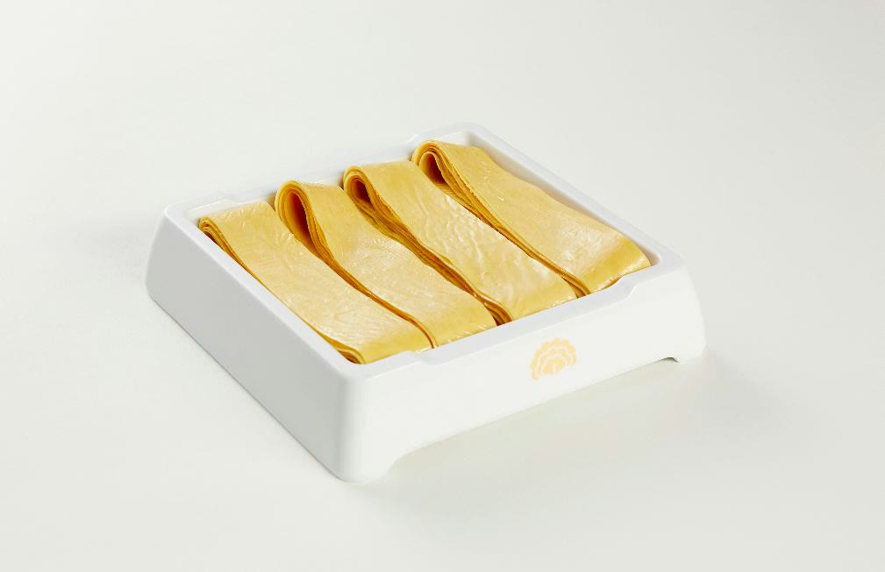
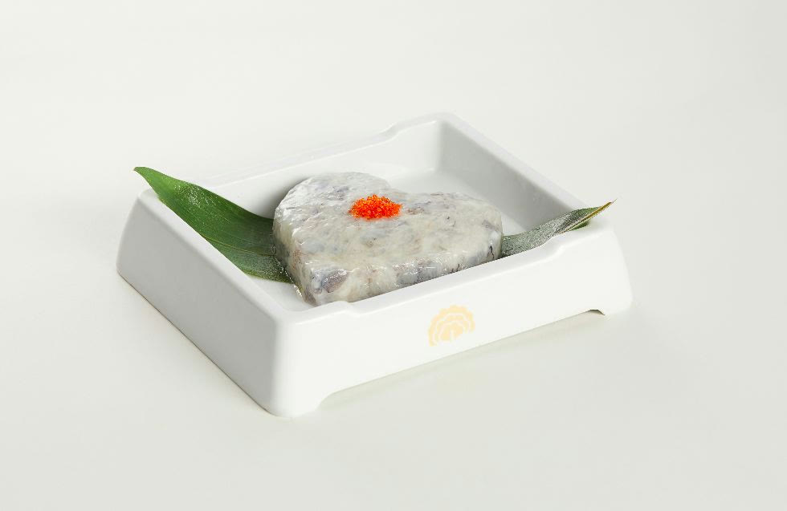
得到了购买理由，接下来就是实现产品，当产品实现了，那么购买理由也就成立。3 ）产品实现就是满足购买理由产品实现这一环节主要得益于傣妹火锅团队的超强执行力；历经半年苦心研发，搜寻了全球各大供应商，经过多轮内部测试迭代，最终找到来自5000 公里外 M3 等级的澳洲极品肥牛。为了把澳洲极品肥牛的品质传达出去，我们为巴掌大肥牛打造一张产品履历表，并创意了系列话语体系。
巴掌大肥牛履历表
4 ）创造消费者的产品体验在每一处机关算尽，营造产品的体验。我们不仅要创意产品，更要在消费者购买体验上下文章。首先在产品上桌的时候我们制定了每一块肉都要达到 30cm 长， 7cm 宽的标准；而且在出餐的产品上顶部插小国旗、底部垫冰来提升产品的价值感；最后我们还在上餐时给店员设置了一套话语：“您好，这是傣妹巴掌大肥牛； 100 %进口澳洲肥牛；轻涮 15 秒最好吃；欢迎您品尝”。
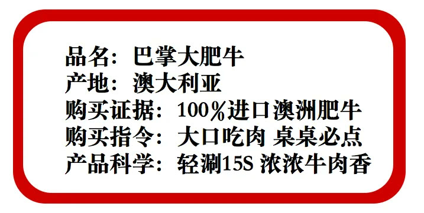
5 ）产品传播：门店全面媒体化店面就是最大的自媒体，店面就是企业的中央台，我们将其变成品牌的传播平台,展开阵地式的传播。所以从顾客进店的全流程触媒进行设计：店外宣传：门店海报，展示产品信息，进行流量拦截
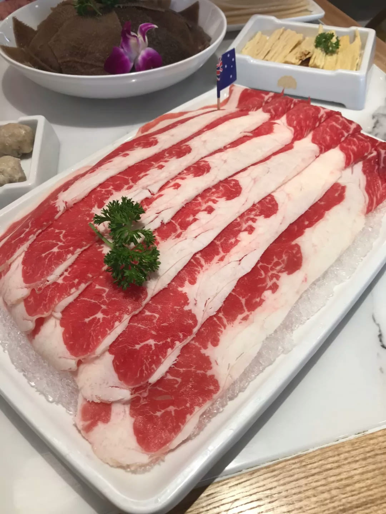
店内全覆盖：门店吊旗，打造热卖氛围
桌面台卡：产品信息多点曝光
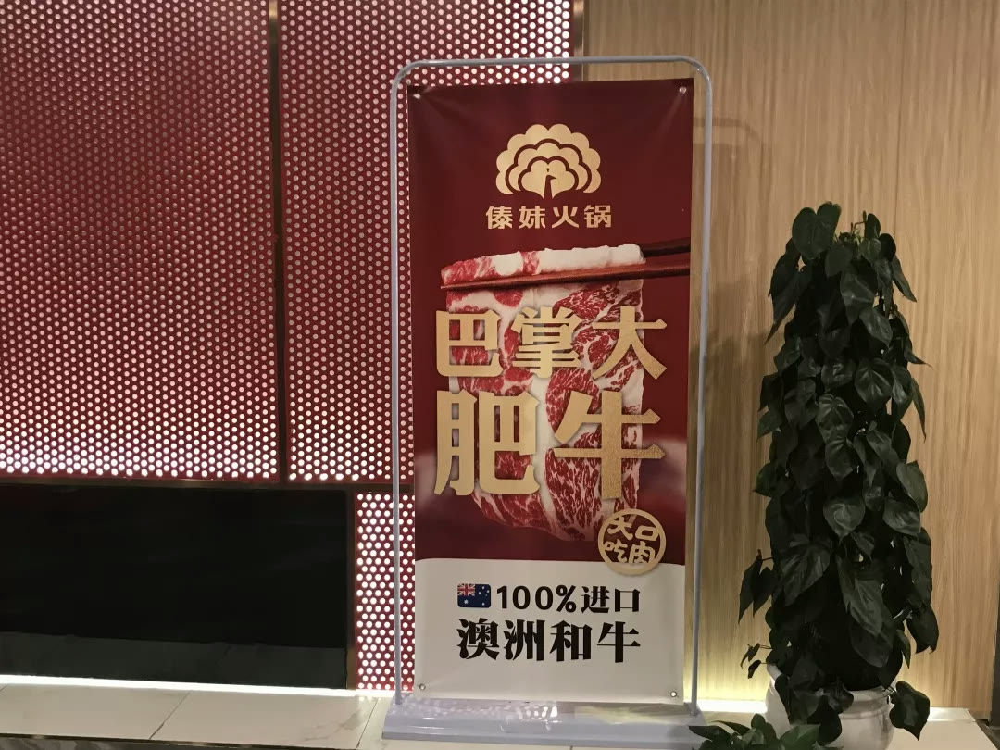
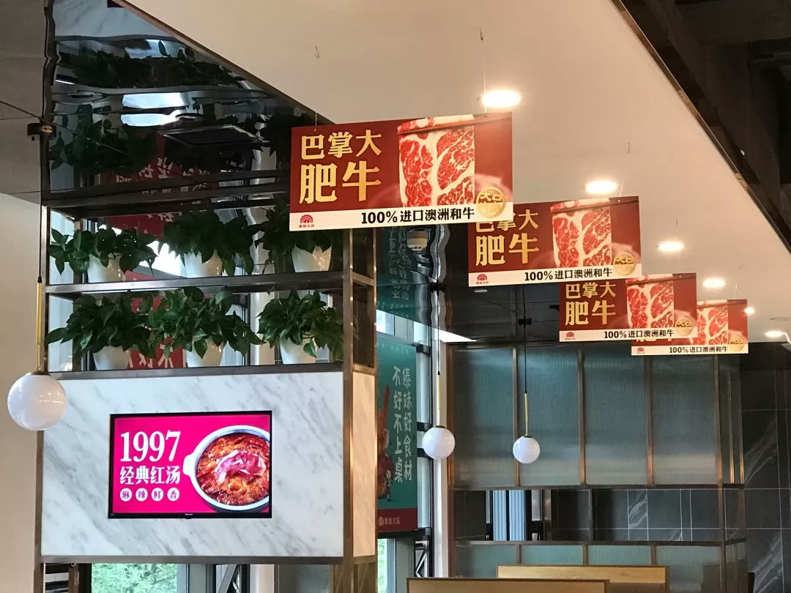
纸质菜单：传播购买理由
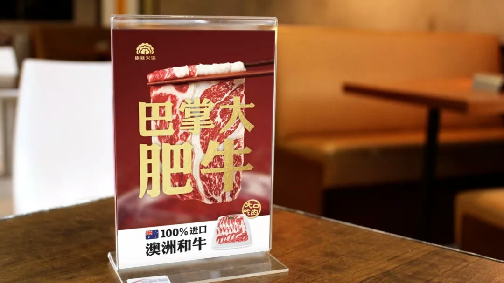
用创意引爆战略，持续不断创造新的购买理由，为品牌带来新生意、新认知。项目组创意开发大单品“巴掌大肥牛”，上市的第一个月点单率占比牛肉类产品 36 %，销售量在牛肉类产品中排行第一。傣妹火锅案例总结所有的事都是一件事，华与华通过餐饮策划“四大天王”，一举奠定傣妹火锅管用 100年的品牌顶层设计。超级符号：孔雀开屏，为品牌注入文化原力；品牌谚语：“我爱傣妹 傣妹爱我”为品牌插上腾飞的翅膀；超级菜单：战略型营销道具，打造不花一分钱的广告位；超级产品：巴掌大肥牛，为品牌带来新生意，新认知；
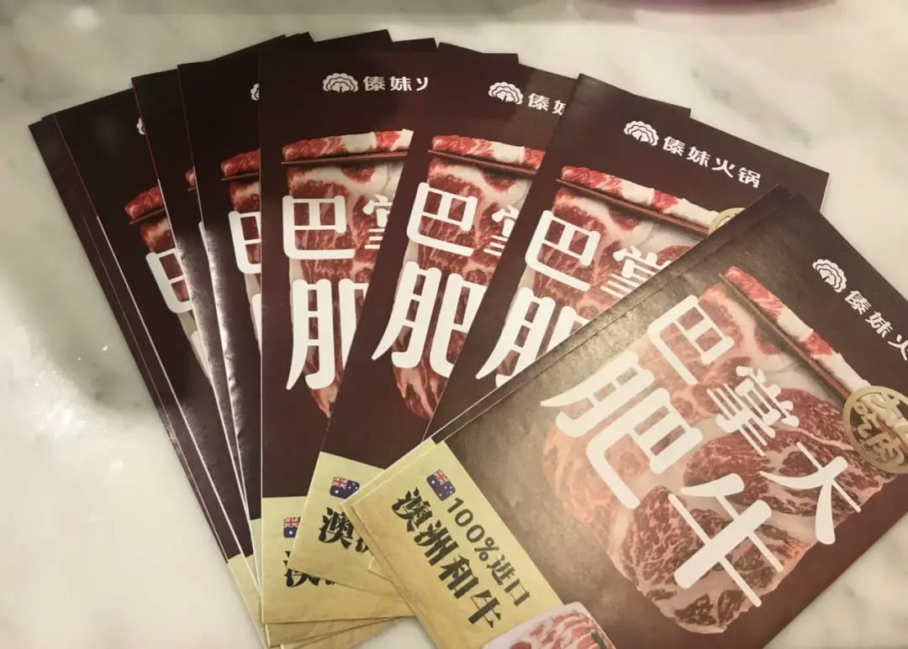
四大天王的全面落地，实现了傣妹火锅村姑变时尚白领的华丽转身，实现门店营业额同比提升 18 . 3 %，平效同比提升 151 %；为傣妹这个经典火锅品牌插上了在新时代飞翔的翅膀。
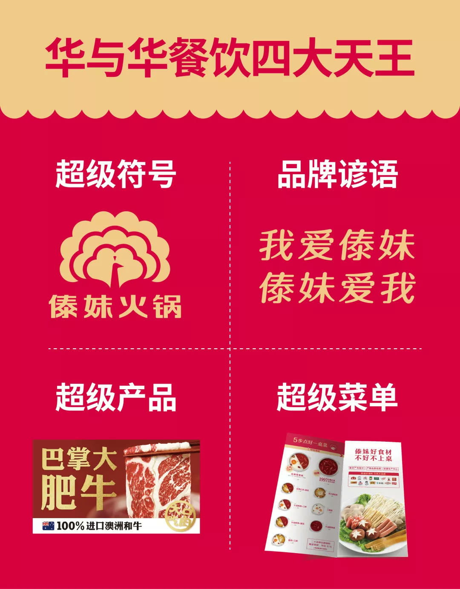